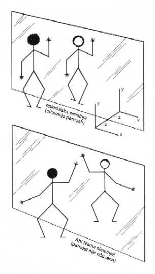

Meðuigra C: KAKO SMO ZA JEDAN VIKEND NARU¥ILI PARNOST... I OTKRILI BOGA
Ne mogu verovati da je Bog levak, i to slab.
Volfgang Pauli
Pogledaj se u ogledalu. Ne izgleda¥ lo¥e, a? Pretpostavimo da podigne¥ desnu ruku. Tvoja slika u ogledalu takoðe æe podiæi desss... Auh. Nije desnu? Levu ruku. Kakav bi to ¥ok bio kad bi slika u ogledalu podigla pogre¥nu ruku. To se, koliko znamo, jo¥ nikada nije desilo ljudima. Ali jeste muonu, koji nam je priredio i odgovarajuæe iznenaðenje.
Ogledalska simetrija je u laboratorijama proveravana bezbroj puta. Nauèno naziv za nju glasi: oèuvanje parnosti. Ovo je prièa o jednom važnom otkriæu, ali i o naèinu na koji, u toku napredovanja nauke, èesto samo jedna ružna èinjenica usmrti neku predivnu teoriju. Sve je poèelo u petak za vreme ruèka, a zavr¥ilo se tri i po dana kasnije, u utorak oko èetiri sata ujutro. Za jednu od na¥ih 'najdubljih istina' o naèinu na koji se priroda pona¥a pokazalo se da je plitka neistina. Samo nekoliko sati pomnog prikupljanja podataka uèinilo je da se zauvek promeni na¥e shvatanje o naèinu na koji je Vaseljena sazdana. Kad se za neku elegantnu teoriju pokaže da je netaèna, kod nauènika nastupa op¥te razoèarenje. Saznamo da je priroda trapavija i glomaznija nego ¥to smo mislili. Ali bol bude ublažen verom da æe jednog dana, kad sve bude poznato, pred na¥im pogledom zablistati jedna dublja lepota. Tako je i bilo kad je otkrivena naru¥ena parnost, u samo nekoliko januarskih dana godine 1957. u gradiæu Irvington na Hadsonu, tridesetak kilometara severno od grada Njujorka.

Fizièari simetriju vole zato ¥to ona ima matematièku i intuitivnu lepotu. Primeri za simetriju u umetnosti su, recimo, palata Tadž Mahal, ili neki grèki hram. U prirodi, ¥koljke, jednostavne životinjice i razni kristali ispoljavaju ponekad simetriène obrasce, veoma lepe; a nije lo¥e ni ljudsko telo, koje ima gotovo savr¥enu dvostranu simetriju. U zakonima prirode ima bogate, izobilne simetrije; smatralo se, do januara 1957, da su apsolutni i savr¥eni. Ogromno su nam pomogli u shvatanju kristala, velikih molekula, atoma i èestica.
|